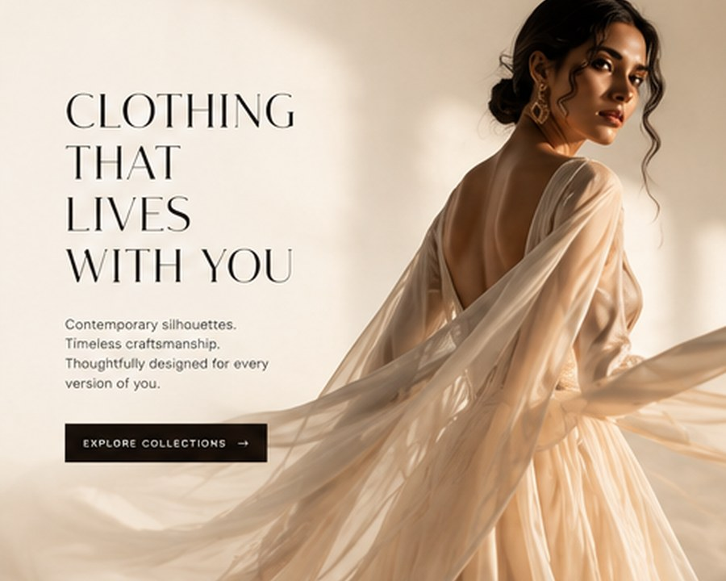
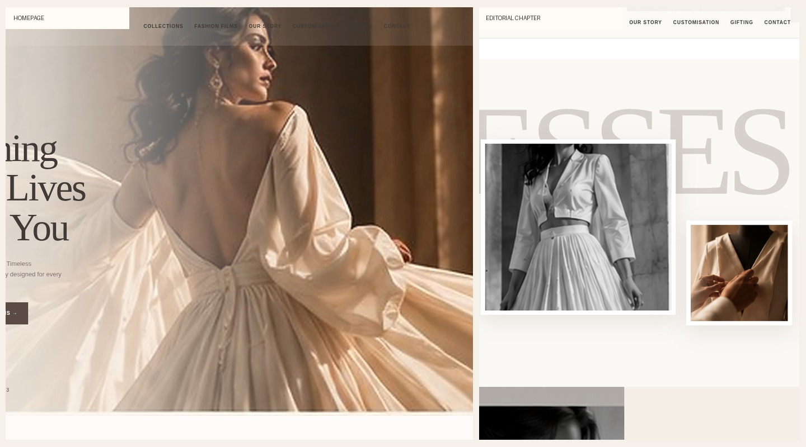
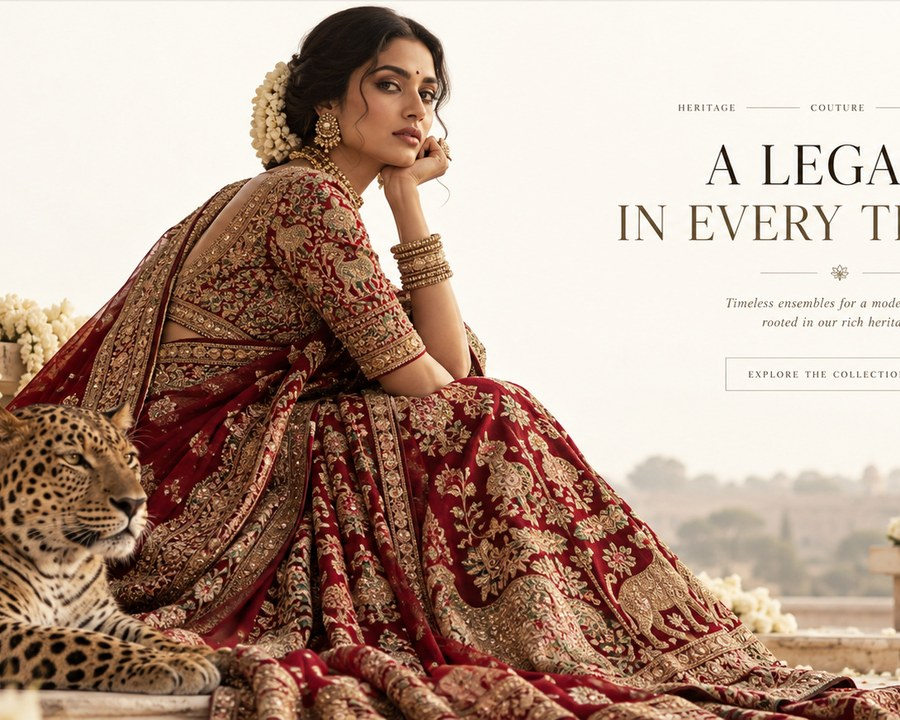
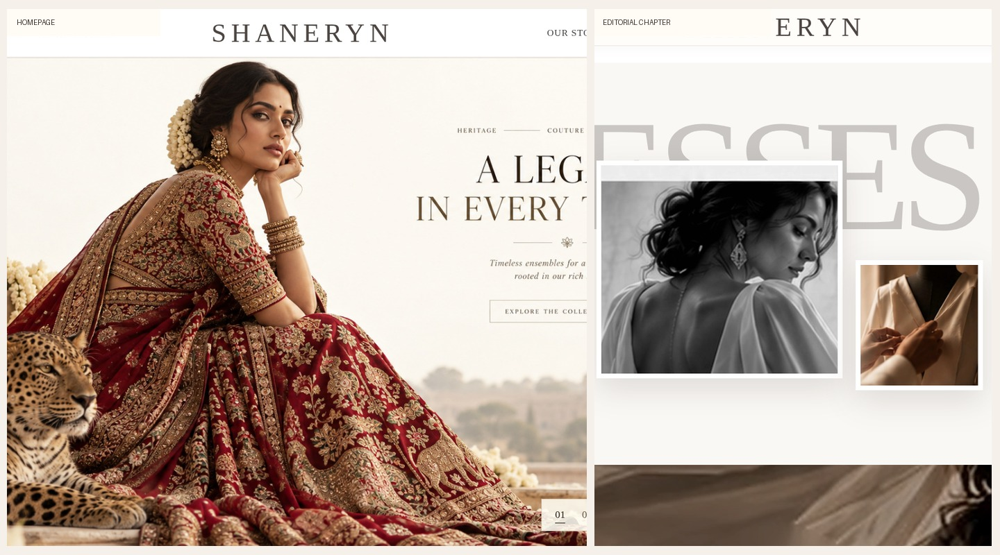

ORIGINAL · UNCHANGED

Approved version
The client's existing composition and warm luxury editorial direction, preserved exactly.
View original ↗Creative Direction · Client Review · Original vs Editorial Revision
The originals remain untouched. The new alternatives change the composition, typography and colour flow—not just the background shades.

The client's existing composition and warm luxury editorial direction, preserved exactly.
View original ↗
Refined Dresses chapter, monochrome About photography, softer typography and a calm white-to-linen colour flow.


Pearl-white editorial direction with a restrained Dresses chapter, layered portrait photography and soft beige storytelling.